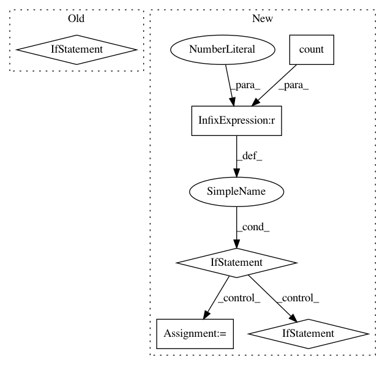

c40305a954f3335c22cb98a42c8daa2ca9ca4a0a,onnxmltools/convert/keras/operator_converters/Conv.py,,convert_keras_conv_core,#Any#Any#Any#Any#Any#Any#Any#Any#,18
Before Change
if is_transpose: // bypass onnx engine issue on convtranpose support.
attrs["auto_pad"] = "SAME_LOWER"
shape = [-1 if i is None else i for i in op.output_shape]
if channels_first:
attrs["output_shape"] = shape
else:
attrs["output_shape"] = shape[0:1] + shape[-1:] + shape[1:-1]
else:
attrs["auto_pad"] = "SAME_LOWER"
else:
raise RuntimeError("Unsupported padding type "{}"".format(op.padding))
After Change
if op.padding == "valid":
attrs["auto_pad"] = "VALID"
elif op.padding == "same":
if op.input_shape.count(None) > 1:
if is_transpose:
attrs["auto_pad"] = "SAME_LOWER" // the controversial def in onnx spec.
else:
attrs["auto_pad"] = "SAME_UPPER"
else:
output_padding = [0] * len(op.kernel_size)
if hasattr(op, "output_padding") and op.output_padding is not None:
output_padding = op.output_padding
attrs["pads"] = _calc_explicit_padding(op.output_shape if is_transpose else op.input_shape,
op.input_shape if is_transpose else op.output_shape,
output_padding,
op.kernel_size,
op.strides,
op.dilation_rate,
list(range(len(op.input_shape))) if channels_first else input_perm_axes)
else:
raise RuntimeError("Unsupported padding type "{}"".format(op.padding))
intermediate_output_name = scope.get_unique_variable_name("convolution_output")
In pattern: SUPERPATTERN
Frequency: 3
Non-data size: 6
Instances
Project Name: onnx/onnxmltools
Commit Name: c40305a954f3335c22cb98a42c8daa2ca9ca4a0a
Time: 2018-12-13
Author: wenbingl@outlook.com
File Name: onnxmltools/convert/keras/operator_converters/Conv.py
Class Name:
Method Name: convert_keras_conv_core
Project Name: AlexsLemonade/refinebio
Commit Name: a971f44300932557e9a806c991c5e81eedf62e4e
Time: 2020-06-16
Author: willvauclain.dev@gmail.com
File Name: api/data_refinery_api/serializers.py
Class Name:
Method Name: validate_dataset
Project Name: AlexsLemonade/refinebio
Commit Name: e71409990c4bebd972dc4e5f3da711bda5a2dc65
Time: 2020-07-01
Author: willvauclain.dev@gmail.com
File Name: api/data_refinery_api/serializers.py
Class Name:
Method Name: validate_dataset